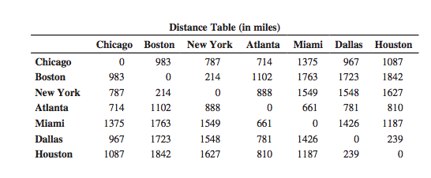
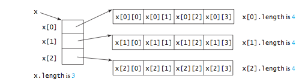
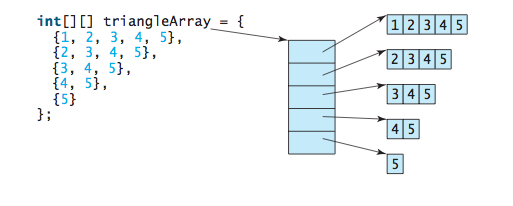

CS201: Introduction to Programming
Lecture 8 / Multidimensional Arrays
Reading assignment: chapter 8
Lesson Objectives
- To give examples of representing data using two-dimensional arrays
- To declare variables for two-dimensional arrays, create arrays, and access array elements in a two-dimensional array using row and column indexes
- To program common operations for two-dimensional arrays (displaying arrays, summing all elements, finding the minimum and maximum elements, and random shuffling)
- To pass two-dimensional arrays to methods
- To use multidimensional arrays
Introduction
Data in a table or a matrix can be represented using a two-dimensional array. The preceding chapter introduced how to use one-dimensional arrays to store linear collections of elements. You can use a two-dimensional array to store a matrix or a table.
To represent the above table as a two-dimensional array, we'd have the following:
double[][] distances = {
{0, 983, 787, 714, 1375, 967, 1087},
{983, 0, 214, 1102, 1763, 1723, 1842},
{787, 214, 0, 888, 1549, 1548, 1627},
{714, 1102, 888, 0, 661, 781, 810},
{1375, 1763, 1549, 661, 0, 1426, 1187},
{967, 1723, 1548, 781, 1426, 0, 239},
{1087, 1842, 1627, 810, 1187, 239, 0},
};
An element in a two-dimensional array is accessed through a row and column index. For example:
int MiamiNewyork = distances[2][4];
To create a two-dimensional array, we use the new operator:
int[][] matrix = new int[5][5];
A two-dimensional array is actually an array in which each element is a one-dimensional array. To get the length of an array, we access using the .length variable for each dimension.
int[][] matrix = new int[3][4]; int numRow = matrix.length; int numCol = matrix[0].length;
In the above example we assume that all rows have the same number of columns, so we pick the size of the first row. However, it is possible to have a ragged array. For eample:
And the corresponding code is:
int[][] triangleArray = new int[5][]; triangleArray[0] = new int[5]; triangleArray[1] = new int[4]; triangleArray[2] = new int[3]; triangleArray[3] = new int[2]; triangleArray[4] = new int[1];
Common Two-dimensional Array Patterns
Initializing arrays with input values
Initializing arrays with random values
Print arrays
Summing all elements
Summing elements by column
Which row has the largest sum
Random shuffling
Passing Arrays to Methods as Parameters
Where as before, when we first discussed parameters passing, our focus was on "pass by value" (e.g. passing primitive data type), we no focus on passing arrays as parameters. It's important to recognize that arrays are passed by reference.
Passing by reference can result in changing the values of the referenced arrays.
public class PassByReference {
public static doubleArray(double[] array) {
for (int i = 0; i < array.length; i++) {
array[i] *= 2.0;
}
}
public static void main(String[] args) {
double[] array = { 1.0, 2.0, 3.0 };
for (double a : array) {
System.out.println( a );
}
doubleArray( array );
for (double a : array) {
System.out.println( a );
}
}
}
Multidimensional Arrays
A two-dimensional array consists of an array of one-dimensional arrays and a three-dimensional array consists of an array of two-dimensional arrays.
double[][][] scores = {
{{7.5, 20.5}, {9.0, 22.5}, {15, 33.5}, {13, 21.5}, {15, 2.5}},
{{4.5, 21.5}, {9.0, 22.5}, {15, 34.5}, {12, 20.5}, {14, 9.5}},
{{6.5, 30.5}, {9.4, 10.5}, {11, 33.5}, {11, 23.5}, {10, 2.5}},
{{6.5, 23.5}, {9.4, 32.5}, {13, 34.5}, {11, 20.5}, {16, 7.5}},
{{8.5, 26.5}, {9.4, 52.5}, {13, 36.5}, {13, 24.5}, {16, 2.5}},
{{9.5, 20.5}, {9.4, 42.5}, {13, 31.5}, {12, 20.5}, {16, 6.5}}
};